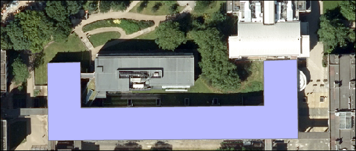

Data for GIS: Creating data
The background to data for GIS will be covered in the lecture segment at the beginning of the class, and the presentation and any other supporting materials will be available in Minerva. The lecture segment should help you to understand why you are doing these exercises. If you still aren’t sure, please ask Clare.
Learning outcomes
When you have completed this section of the workbook you should be able to
- Explain what a geodatabase consists of and why it is used to store GIS data
- Set up storage for GIS data
- Use the tools in GIS to draw (digitise) your own data
Introduction
Digitising or tracing data manually in Arc involves having a background map which shows the locations that you wish to digitise, and then using the editing tools to draw vector polygons, lines and points. In this set of exercises you will produce a map of Chancellors Court in the University showing the outlines of the buildings, the paths, and any other features such as seats and signposts.
Even if you don’t actually need to digitise a map it is extremely useful to know how to set up your own feature classes and how to add features by editing. Sometimes you just need to outline your study area, or add a point to show where something specific is, or as input to one of the tools provided in Arc.
This is a very brief overview of the tools for digitising in Arc as we are limited for time. If you need to do anything more complex then you should be able to find plenty more information in the ArcGIS Pro Help. If you are a Geology student you will be getting more information in level two as part of your preparation to produce your dissertation map in ArcGIS Pro.
Vector and raster
If you feel that you are still not clear about the difference between raster and vector GIS data it would be worth having a look at the video “Learn more about raster and vector map data” by the Ordnance Survey.
As you deal with more GIS data you’ll start to find it easier to spot which formats are raster and which are vector, but you need to be thinking about it already.
Obtaining the background data
You will need to
- download the
DigitiseData.zipfile from Minerva - unzip the file to your GIS working folder
You should have a folder containing data and an ArcGIS project file.
- Open the
.aprxfile in ArcGIS Pro by double-clicking on it - when it finishes opening check that the links in the contents pane are not broken - if you have red exclamation marks next to any layer you need to repair the links following the instructions below.
Once your file is open and any broken links are repaired you should be able to see an aerial view of the University which uses aerial data from Digimap.
Repairing broken file links
If you find that your map doesn’t show and that you have the red exclamation marks next to the data as in the image below (note that this isn’t the same map project that you are using), follow these instructions to repair the data links.
If you use absolute file paths and you have to move the files from one location to another, or if you have a project folder set up by someone else, you may find that the broken links are marked by a red exclamation mark next to the layer name. This can also happen if you are adding .lyr files for symbology.
This video clip can be found in the module area of Minerva or in the full list of video clips.
To check the name of the file that you’ll need to locate:
- Open the layer properties and go to the
Sourcetab - Under
Data Sourceyou will see which file Arc is looking for - make a note of this
- Look through your file system to find the correct file
Once you know where the file you need is located, do the following to repair the link:
- from the layer properties source tab
Set Data Source... - Navigate to the file that you need then
OK > OK
That layer should now appear on your map. If you’re lucky all of the missing layers will appear, but if you’re not you’ll need to repeat the process for each layer.
Preparing to digitise data
The first thing you need to do when preparing to digitise is to set up the storage for your data.
When the project was set up Arc automatically included a geodatabase within it. The geodatabase is the overall container for your data and will store feature datasets and feature classes.
You’ve already worked with feature classes in previous chapters. These are vector layers which can hold points, lines or polygons. A feature dataset can contain a range of related feature classes. The image below shows what your Catalog will look like when it is fully set up (note that the geodatabase name may be different - that doesn’t matter.
Set up a feature dataset within a geodatabase
To set up the geodatabase contents -
- In the Catalog pane go to the
Databasessubheading and open it out. There will be a geodatabase with the same name as the project / folder. - Right-click on your geodatabase
New > Feature Dataset- Enter a name that describes the information that it will contain, in this example it could be
University - Set your projection - in this case it should be British National Grid so select
Projected Coordinate Systems > National Grids > Europe > British National Grid - Click
Run
Set up a feature class
Still in the Catalog pane
- Right-click on the feature dataset that you’ve just set up (in this example the one called
University) New > Feature Class- Fill in the geoprocessing dialog that opens as shown below
- give your feature class a name that explains what it shows, with no spaces or punctuation, e.g. in this case
Buildings - the
Feature Class Aliasis the name that will appear in the contents pane - this can include spaces - Choose the correct
Geometry Type- it’s important to get this right as it isn’t possible to change this once you’ve created the feature class. For the buildings layer selectPolygon - If you are storing the feature class in a dataset which already has a spatial reference set you shouldn’t need to fill that in again
- give your feature class a name that explains what it shows, with no spaces or punctuation, e.g. in this case
- If you click on
Nextyou’ll get an opportunity to add fields and other information, but don’t worry about this for now - Click
Finishto create the new feature class
The feature class should be added to your feature dataset, and also added to the contents pane of the map that is open. If it isn’t automatically added to the contents pane just drag and drop it across.
Setting up further feature classes
In the same way, inside the feature dataset, create a feature class called
Pathswith a feature type ofLineAlso create a feature class called
Treeswith a feature type ofPointNote that if you forget to change the feature type when you are creating a feature class it can’t be changed later. All you can do is use the Catalog to delete the feature class and create a new one.
Arc should automatically add the new feature classes to your table of contents. If it hasn’t, add them now. Your ArcGIS Window should now look something like the image below.
Digitising in ArcGIS Pro
You should already have an aerial view as a background for your map. For these exercises you’ll be digitising polygons, points and lines by tracing over features on this view.
Starting to digitise - polygons
This video clip can be found in the module area of Minerva or in the full list of video clips.
- To start editing simply click on the
Edittab of the ribbon - Click on the
Createbutton in theFeaturesgroup - A
Create Featurespane should open on the right-hand side of the window and this should show the editable layers in your map.
- Click on the
Buildingslayer in the Create Features pane and select thePolygonstool - the one on the left. As usual, if you hover over icons you’ll get a tooltip.
Now you’re ready to start adding a feature. We’ll start by digitising the School of Earth and Environment (SEE). So start by zooming in to the building.
I realise you may not actually have seen the School of Earth and Environment by this point. To find it use the Go To XY tool from the Map tab of the ribbon.
- When you click on the
Go To XYbutton a small panel will open at the bottom of the map screen.
You may need to change the final box on the tool so that it reads Meter. Once you’ve done that you should be able to enter the grid reference for Chancellors Court which is:
- 429375 434402
Now click on the hand symbol at the end of the tool to pan to Chancellors Court.
The School of Earth and Environment is the building along the northern side of Chancellors Court and the building just to the north of it.
- Now you know where the building is, zoom in to it
- To create a polygon left-click along the edges of the building. Each click creates a
Vertex, or corner. - To finish a polygon double-click on the last point or press the
F2key on the keyboard. The polygon should be outlined by the selection colour, e.g. turquoise, once you’ve done this. - You can continue straight on to digitise another building if you wish to, but remember to save your edits regularly - see the next point
Saving your edits
You need to remember to save the features that you’ve digitised at regular intervals. This is also described as saving your edits.
- To save your edits click
Saveon the Edit tab of the ribbon. If you don’t want to save your edits clickDiscardinstead.
Remember to save your edits
It is important to remember to save your edits on the Edit toolbar - they are not being stored in the map, but are being written to the external feature class that you have set up. If you close Arc without saving the edits, even if you save the map, they won’t be there next time you open it.

Transparency
Don’t forget that you can make layers transparent. As you draw your building polygons you’ll gradually be covering up the layers underneath and it can be useful to see through the top layers.
Continue to digitise buildings so that you have polygons for all of the buildings around Chancellors Court (the open space south of Earth and Environment). Remember to save all of your new polygons.
Stopping a digitising session
Once you’ve finished adding items it isn’t obvious how to stop!
- Click on the
Maptab of the ribbon - Click on the
Explorebutton from the Navigate group
If you don’t do this you tend to find that you’re adding new features by mistake - which is rather irritating!
Potential issues with the data
Stop and think about the digitising that you have just done. Can you think of any potential issues with the data that you have created in this way?
Make some notes for yourself on the issues that you identify. Use the questions below as a starting point.
- What scale did you digitise at?
- What effect will this have on the amount of detail that you included?
- What recommendation would you make about viewing the data on a map?
- How accurate were you when you were placing the vertices (by clicking on the map)?
- How did you decide where to put the features?
- How clear were the edges of the building that you were digitising?
- What did you do when there were trees overlapping other features?
- What about shadows? Did they make it hard to see building edges?
- Think how this might affect data that you have obtained from other people. How might they have solved the same problems?
Modifying features
Once you’ve created a feature you may need to edit it, either to move it or to reshape it.
This video clip can be found in the module area of Minerva or in the full list of video clips.
Watch Digitising in Arc Part 1 for general information about digitising.
- On the ribbon go to the
Edittab and click on theModify - This should open the
Modify Featurespane on the right of the map window
- Use the
Selecttool from the Edit tab of the ribbon to click on the feature that you want to modify so that the feature is outlined in turquoise to show that it is selected. - On the
Modify Featurespane click onVertices. The outline of the feature on the map should change - see the image below. The vertices will be marked as small boxes - the red one shows the start/end and the green ones are the intermediate vertices.
Controlling selections
If you have overlapping layers it can be difficult to select just the feature that you want, either to find the details for it, or to edit it.
When you click on your map to select a feature it is possible to select the correct one from the little dialog which pops up.
This isn’t always convenient, though, particularly if you need to do a lot of selecting items.
It can be useful to prevent other layers from being selectable as if more than one feature is selected you won’t be able to make the changes.
This video clip can be found in the module area of Minerva or in the full list of video clips.
To control which layers can be selected from, and which can’t, try the following:
- From the top of the Contents pane click on the
List by Selectionbutton - remember the tool tips appear if you hover over the buttons - In the view of your layers which appears ensure that
- the layer or layers that you want to be able to select from are ticked - in this case check that Buildings, Paths and Trees are ticked
- the layer or layers that you don’t want to be able to select from are not ticked.
- It’s a good idea to go straight back to the
List By Drawing Orderview of your layers or it’s easy to get confused later
Modifying features (continued)
Once you have the feature selected with the Vertices tool it is now a case of using the mouse cursor to move the edges or corners of the feature
- use the vertices editing on the building outline that you’ve just created to move some of the vertices - it doesn’t matter in this case if the outline isn’t quite right, you’re just practicing!
- to remove a vertex (corner) just right-click on it and select
Delete Vertexfrom the menu - To add a vertex (corner) right-click on one of the edges and select
Add Vertexfrom the menu - Once you’re happy with the shape finish editing by pressing the
F2key, thenSaveusing the button on theEditribbon.
Try some of the other tools on the Modify Features pane. In particular try Move, Rotate and Scale from the Alignment section.
Once you’ve finished trying out the tools delete any polygons which don’t match the buildings around Chancellors Court and redraw them in the correct place.
Adding more information to a feature class
Next you’ll add some extra information to your new features. It would be useful to be able to label the buildings with their names, so we’ll have to add another field to the Buildings feature class so that we can add Feature attributes.
Adding new fields to a feature class
- Right-click on the
Buildingslayer in the Contents pane and open theAttribute Table - To add a new field click on the
Addbutton on the attribute table toolbar
- The attribute table will change to
Fieldview - showing more information about the data types and formats
- Fill in the details in the new field (which will appear at the bottom of the list) to create a new field called
Name- The
Field Nameshould be short and contain no spaces or strange characters Aliasis how the name will be displayed and can include spaces - it’s still a good idea to keep it short- Set the
Data TypetoText - Set the
Lengthto120- that’s the maximum number of characters you’ll be able to use in a name
- The
- Once you’ve filled in that click on the
Savebutton on the ribbon
You can add more fields in this view if you want to, but for now close the Fields tab and return to the Buildings attribute table.
Adding attributes to a field
The first thing you need to do is work out which row in the attribute table belongs to which feature on the map. The easiest way is to select a row in the attribute table and see which feature shows as selected on the map.
Once you know which feature you are entering the name for, double-click in the space under Building name and type in the name. See the image below for the names of the buildings around Chancellors Court and enter them all in your attribute table.
- Once again, don’t forget to
Saveyour edits frequently by clicking on the button on theEdittab of the ribbon - When you’ve finished adding names to each building and have saved them, just close the attribute table.
Labelling features on the map
Now that you have label text in your attribute table you can label the features on your map.
This video clip can be found in the module area of Minerva or in the full list of video clips.
- In the Contents pane select the layer that you want to label - in this case the Buildings layer
- On the ribbon click the
Labellingtab, then click on theLabelbutton on the left-hand side - Check that
Label Features in this Classis ticked, then use the dropdown next toFieldto select the field in which you entered your building names.
The labels should appear on top of the features to which they apply and should look something like the image above, with the names visible.
You can try out some of the options in the Text Symbol and Label Placement groups on the ribbon to see what they look like. Remember that this is an opportunity to experiment, because it really doesn’t matter what the end result looks like!
Try changing the font of your labels and maybe making them larger.
What effect do the options under Label Placement have? Do any of them look better to you than the default?
Digitsing line features
Digitising line features is very similar to digitising polygons, except that you don’t have to “close” a line.
This video clip can be found in the module area of Minerva or in the full list of video clips.
Watch Digitising in Arc Part 1 for general information about digitising.
You should already have the Paths layer added to your map, if you haven’t add it now.
Follow the instructions given for digitising buildings, but this time trace the paths across Chancellors Court into the Paths feature class.
Don’t forget to save your edits when you’ve finished.
You don’t need to add any labels for the lines layers in this case, but if you did it all works in exactly the same way as it did for the buildings.
Potential issues with the data
Again, stop and think about the digitising that you have just done. Can you think of any potential issues with the data that you have created in this way?
Make some notes for yourself on the issues that you identify. Use the questions below as a starting point.
- What scale did you digitise at?
- What effect will this have on the amount of detail that you included?
- What recommendation would you make about viewing the data on a map?
- How accurate were you when you were placing the vertices (by clicking on the map)? How easy is it to be accurate with the tools?
- How did you decide where to put the features?
- Did you decide to draw the edges of the paths or the centre line?
- How can you be sure of what happens underneath trees or buildings?
- Think how this might affect data that you have obtained from other people. How might they have solved the same problems?
Digitising point features
Again, digitising point features is very similar to digitising lines and polygons, except that you only have to click once for each feature.
This video clip can be found in the module area of Minerva or in the full list of video clips.
Watch Digitising in Arc Part 1 for general information about digitising.
You should already have the Trees layer added to your map, if you haven’t add it now.
Follow the instructions given for digitising buildings, but this time place a single point for each tree you can see in Chancellors Court into the
Treesfeature class.Don’t forget to save your edits when you’ve finished.
You don’t need to add any labels for the points layer in this case, but if you did it all works in exactly the same way as it did for the buildings.
Potential issues with the data
Again, stop and think about the digitising that you have just done. Can you think of any potential issues with the data that you have created in this way?
Make some notes for yourself on the issues that you identify. Use the questions below as a starting point.
- How easy is it to decide where you should add a point to represent a tree?
- How easy is it to be accurate with the drawing tools?
- Think how this might affect data that you have obtained from other people. How might they have solved the same problems?
Symbolising your data
In other words, styling it, or making it look better.
Changing the colour of any of the features on your map is simple -
- Select a layer in the contents pane, e.g. the buildings
- Click on the
Appearancetab of the ribbon, and then onSymbology - This should open the symbology pane on the right of the window
- Click on the symbol to change it’s colour, either via the
Galleryfor presets, or viaPropertiesto set your own.
Try this with the paths and trees too.
You may not have a tree-like symbol available in ArcGIS Pro, don’t worry about this for now. You’ll find out how to add more choices to the Gallery in a future class.
Finally…
Check that you’ve finished digitising the buildings around Chancellors Court and the paths across it. Check that all of the layers you have created - the points, lines and polygons, have all been symbolised appropriately and are labelled where necessary.
Once you’ve turned off the background imagery layer, and the ESRI base map layer, your data could look something like the map below. We won’t worry about setting up a full layout at the moment as that is covered in another chapter.